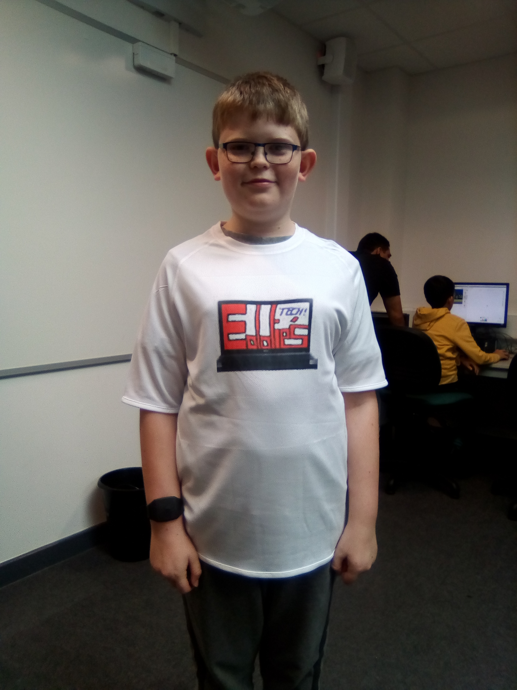
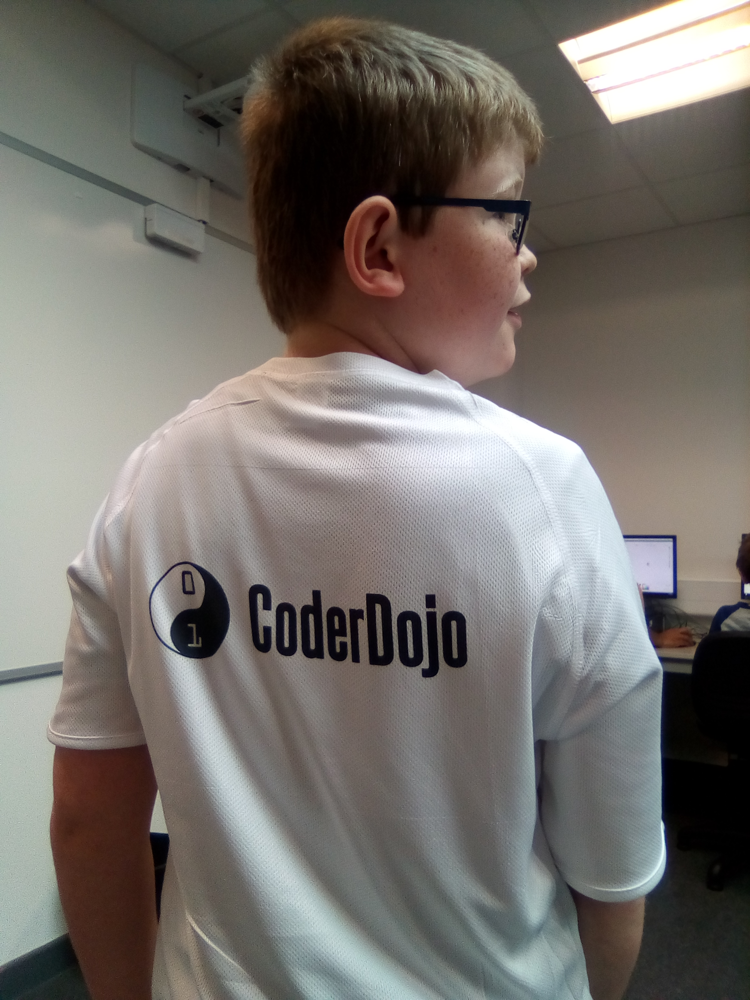

Hi! This is Eddie and Joe's page that was created at DojoCon!!!! :)
This is the tshirt i hot printed my design onto. It is a very simple process and I got double sided. The first thing you do is make you design on powerpoint and reverse it. Then you print it off (make sure not to smudge the ink!!). And then a mentor will hot print the printed design onto your tshirt that you have chosen. It costs £3 for one sided and £4 for double sided. I got double sided with my youtube channel logo on the front and CoderDojo on the back!! :)